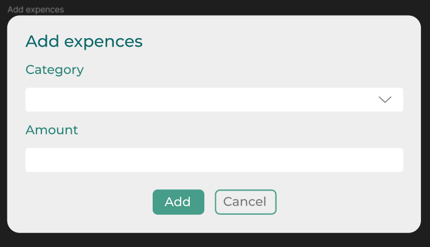

- Users
1.1 Register new user
The purpose of this mode is to allow a person to sign up as a user.
Main scenario:
- A new user accesses the website and sees the Home page:
Pic 1.1.1 View of the home page. (for not signed-in users)
- Then the user clicks “Sign in” button in navbar;
- Application displays sign in form:
Pic 1.1.2 View of the sign in form.
- Here, users are able to sign in with their credentials;
- If he does not have an account he clicks button "Register" and being redirected to the Sign-Up page;
- Application displays registration form:
Pic 1.1.3 View of the registration form.
- User enters data and presses “Sign up” button;
- If error occurs, then error message is displayed;
- If entered data is valid, the record is added to the database, and the user is automatically logged in and redirected to the home page.
1.2 Sign in user
The purpose of this mode is to sign in a user into his/her account.
Main scenario:
- A signed-out user wants to sign in to the website;
- He sees home page, clicks "Sign in" button and is redirected to the login page;
- Application displays sign in form;
- User enters data and presses "Sign in" button;
- If any data is entered incorrectly, incorrect data messages are displayed;
- If error occurs, then error message is displayed;
- If entered data is valid, then user is logged in and redirected to the home page.
1.3 Sign out user
The purpose of this mode is to sign out a user.
Main scenario:
- A signed-in user wants to sign out;
- He sees the “Sign out” button in the right corner of navbar:
Pic 1.2.1 View of the “Sign out” button.
- Application always displays the navbar;
- User presses the “Sign out” button;
- The current user will be signed-out from the system and redirected to the home page.
- Balances
2.1 Add income
The purpose of this mode is to allow user to add his/her income.
Main scenario:
- When a new user registred his/her balance is 0 by default;
- If the user wants to add income he/she needs to press “Add Income” button on the Home Page:
Pic 2.1.1 View of the “Add income” button.
- Application displays add-income form:
Pic 2.1.2 View of the add-income form.
- User selects the category of the income;
- Enters an amount of money he/she wants to add;
- Then user needs to press “Add” button;
- If user doesn’t want to add income he/she needs to click “Cancel” button;
- When user clicks “Add” button, the history of user’s transactions is automatically updated;
- If any data is entered incorrectly, incorrect data messages are displayed;
- If error occurs, then error message is displayed;
2.2 Add expenses
The purpose of this mode is to allow user to add his/her expences.
Main scenario:
- If the user wants to add expences he/her needs to press “Add expences” button on the Home Page:
Pic 2.2.1 View of the “Add expences” button.
- Application displays add-expences form:

Pic 2.2.2 View of the add-expences form.
- User selects the category of the expences;
- Enters an amount of money he/she spent;
- Then user needs to press “Add” button;
- If user doesn’t want to add expences he/she needs to click “Cancel” button;
- If any data is entered incorrectly, incorrect data messages are displayed;
- If error occurs, then error message is displayed;
2.3 Transaction history
The purpose of this mode is to allow user to see all his/her transactions.
Main scenario:
- When user clicks “Add” button on add-income or add-expences form, the history of user’s transactions is automatically updated on the Home Page:
Pic 2.3.1 View of the transaction history.
- If user wants to edit the transaction he/she needs to press “Edit” button on the right of this transaction.
- If user wants to delete the transaction he/she needs to press “Delete” button on the right of this transaction.
2.4 Display of the user balances by date
The purpose of this mode is to allow user to see all his income/expences balances by date.
Main scenario:
- When the user wants to see his income and expences for the particular period he/she needs to set this dates on the Home Page:
Pic 2.4.1 View of the set dates buttons.
- The application will automatically calculate the income and expenses and show it as a diagram on the Home Page:
Pic 2.4.2 View of the income and expenses diagram.
- If error occurs, then error message is displayed;
- Deposits
3.1 Add deposit
The purpose of this mode is to allow user to add and calculate his/her deposits.
Main scenario:
- If the user wants to add deposit he/she needs to press “Deposit” page in the navbar;
- Application displays Deposit Page:
Pic 3.1.1 View of the Deposit Page
- To add a deposit user needs to click on “+Add‘ button in the top right corner;
- Application displays add-deposit form:
Pic 3.1.2 View of the add-deposit form
- User can regulate an amount of money by dragging the slider;
- Application will automatically calculate all other required information;
- To add deposit user need to click “Add” button;
- The deposit will be added to the table.
- If any data is entered incorrectly, incorrect data messages are displayed;
- If error occurs, then error message is displayed;
3.2 Close deposit
The purpose of this mode is to allow user to close his/her created deposits.
Main scenario:
- To close user’s deposit he/she needs to go to the deposits table on Deposit Page by pressing “Deposit” in navbar;
- User needs to find the wanted deposit and click “Close” button on the right of it:
Pic 3.2.1 View of the “Close” button.
- The deposit will be deleted from the table.
- Credits
4.1 Add credits
The purpose of this mode is to allow user to add and calculate his/her credits.
Main scenario:
- If the user wants to add credit he/she needs to press “Credit” page in the navbar;
- Application displays Credit Page:
Pic 4.1.1 View of the Credit Page
- To add a credit user needs to click on “+Add‘ button in the top right corner;
- Application displays add-credit form:
Pic 4.1.2 View of the add-credit form
- User can regulate an amount of money by dragging the slider;
- Application will automatically calculate all other required information;
- To add credit user need to click “Add” button;
- The credit will be added to the table.
- If any data is entered incorrectly, incorrect data messages are displayed;
- If error occurs, then error message is displayed;
4.2 Pay out credit
The purpose of this mode is to allow user to pay out his/her credits.
Main scenario:
- To pay out user’s credit he/she needs to go to the credits table on Credit Page by pressing “Credit” in navbar;
- User needs to find the wanted deposit and click “Pay out” button on the right of it:
Pic 4.2.1 View of the “Pay out” button
- The credit will be deleted from the table.